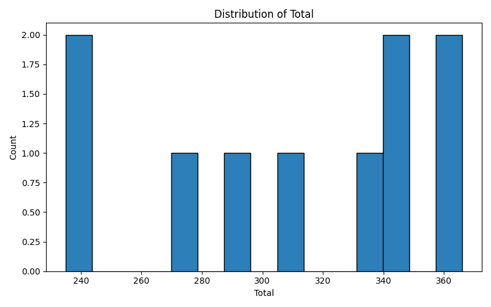

Overview
- Rows: 10
- Columns: 9
- Column names: Student ID, Name, Math, Science, English, History, Total, Average, Grade
Numeric Summary
Shown below are descriptive statistics for numeric columns.
| Column | count | mean | median | std | min | 25% | 50% | 75% | max |
|---|---|---|---|---|---|---|---|---|---|
| Math | 10 | 77.3 | 78.5 | 13.0729 | 58.0 | 67.5 | 78.5 | 87.25 | 95.0 |
| Science | 10 | 77.6 | 82.5 | 12.9203 | 55.0 | 68.5 | 82.5 | 88.0 | 92.0 |
| English | 10 | 77.8 | 79.0 | 11.2428 | 60.0 | 69.25 | 79.0 | 86.5 | 94.0 |
| History | 10 | 78.1 | 82.5 | 13.0508 | 55.0 | 72.75 | 82.5 | 87.75 | 91.0 |
| Total | 10 | 310.8 | 322.0 | 48.6776 | 235.0 | 280.75 | 322.0 | 346.25 | 366.0 |
| Average | 10 | 77.7 | 80.5 | 12.1694 | 58.75 | 70.1875 | 80.5 | 86.5625 | 91.5 |
Categorical Top Values
Top values (up to 5) for categorical columns.
Student ID
- S001: 1
- S002: 1
- S003: 1
- S004: 1
- S005: 1
Name
- Alice Johnson: 1
- Bob Smith: 1
- Charlie Brown: 1
- David Lee: 1
- Emma Davis: 1
Grade
- A: 3
- B: 2
- A+: 2
- C: 2
- B+: 1
Histogram
The histogram below visualizes the distribution of the Total column.
Histogram generated for column: Total